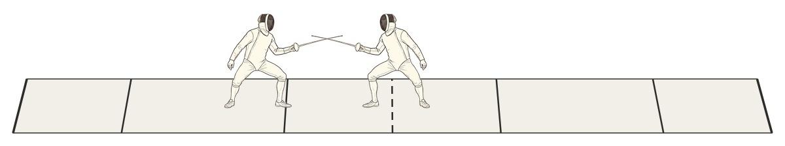
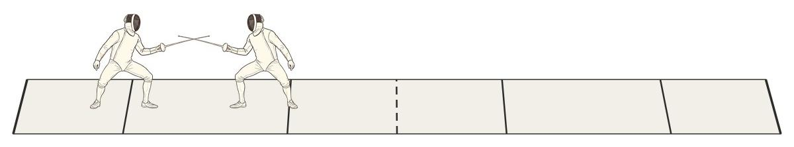
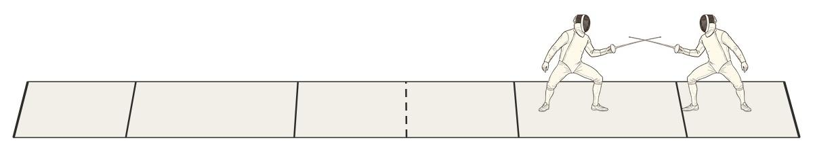

Detailed instructions for how to annotate a touch in Xenophon — Action Sequence, Intention, Strip Location, Initiative, Mode, Appraisal, Cards, and Comments.
The Action Sequence (the ‘Phrase’) describes how a touch was scored. An Action Sequence is simply the sequence of actions leading up to a touch.
| Action | Symbol | Definition |
|---|---|---|
| Attack | A | The initial offensive action to score a point. |
| Counter-Attack | CA | A counter-offensive action versus an attack. A counter-attack goes to the target, not the blade. |
| Parry-Riposte | PR | A defensive-offensive action versus an attack. A parry-riposte moves towards the blade (the defensive parry) and only then towards the target (the offensive riposte). |
| Stop-Hit | SH | A special counter-attack made while doing a retreat. |
| Remise | Rm | A secondary offensive action that immediately follows a prior action which can be an attack, counter-attack, parry-riposte, stop hit, or even another remise. |
For each Action Sequence, one or both fencers may be determined to have used 2nd or 3rd intention.
Location is assigned based on where the fencers are standing when the action begins.
| Zone | Definition |
|---|---|
| C – Center | Neither fencer has fully crossed the center line. |
| LS – Left Side RS – Right Side | For the Right Side, the FotL's back foot is past the center line, and the FotR's front foot is not behind the right 2m line. Vice versa for the Left Side. |
| L2M – Left 2-Meter R2M – Right 2-Meter | For the Right 2-Meter zone, the Fencer-on-the-Right's (FotR) front foot is fully behind the right 2m warning line. Vice versa for the Left 2-Meter zone. |



Initiative goes to whichever fencer makes the attack — regardless of who ends up scoring the touch.
Each fencer's behavior in a touch can be described with a 2×2 matrix to determine their ‘Mode’. Mode is defined from two independent questions: who closed the distance, and who attacked?
| Mode | Fencer Attacks | Opponent Attacks |
|---|---|---|
| Fencer closes distance | Conqueror | Provoker |
| Opponent closes distance | Counteror | Blocker |
Each touch may be marked with an appraisal to judge the merits of how well each fencer performed.
If the director awards a penalty card during a touch, that can be noted in the Cards section.
A Comment input box is available to make any other comments that may be appropriate. Comments for a particular touch are added to the Comment Stream in the correct sequence according to the order of touches.